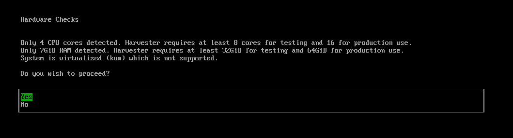
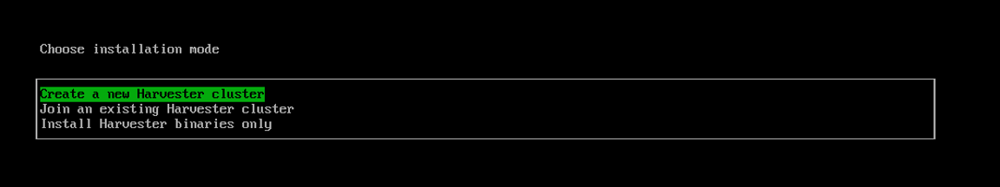
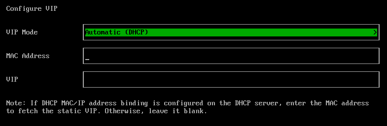
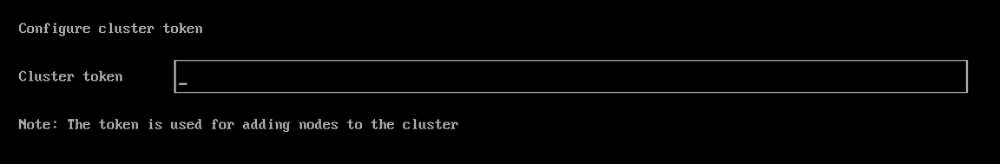
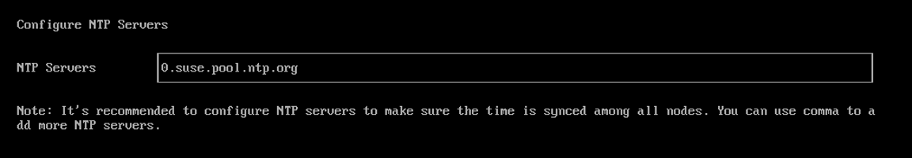
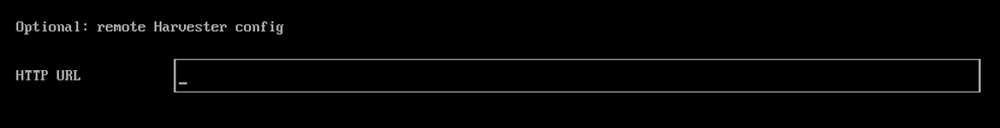
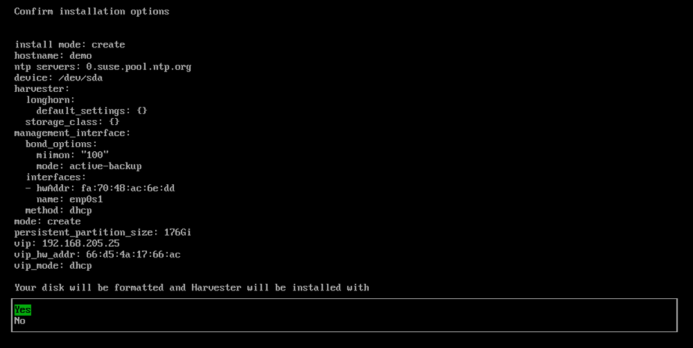
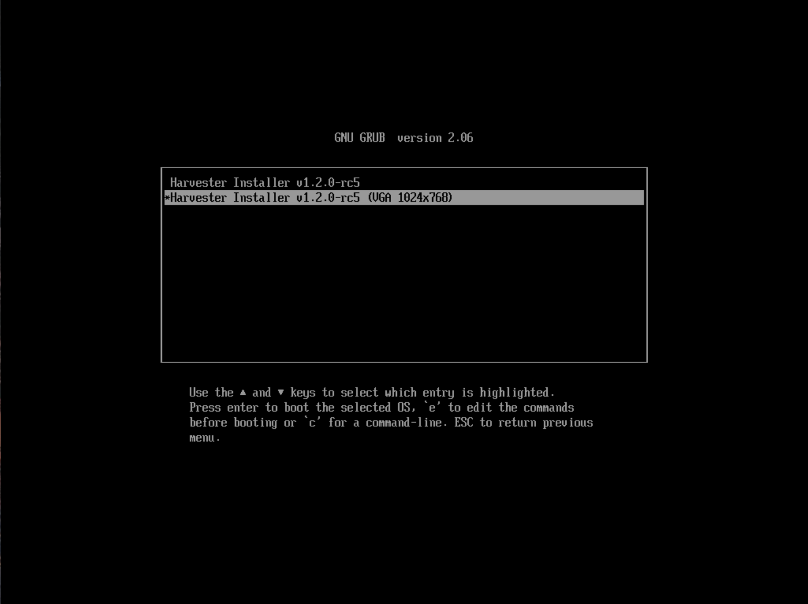

ISOインストール
インストール手順
-
ISOファイルをマウントし、`Harvester Installer`オプションを選択してサーバーを起動します。

インストーラーは自動的にハードウェアをチェックし、最小要件が満たされていない場合は警告メッセージを表示します。すべてのチェックが合格した場合、*ハードウェアチェック*画面は表示されません。

-
矢印キーを使用してインストールモードを選択してください。デフォルトでは、最初のノードがクラスターの管理ノードになります。

-
Create a new Harvester cluster: 完全に新しいクラスターを作成します。 -
Join an existing Harvester cluster: 既存のクラスターに参加します。参加したいクラスターのVIPとクラスタートークンが必要です。 -
Install Harvester binaries only:このオプションを選択した場合、最初の起動後に追加の設定が必要です。
-
-
ノードの役割を選択します。インストールモード`Join an existing Harvester cluster`を選択した場合、このステップを実行する必要があります。

-
Default Role:ノードを管理ノードまたはワーカーノードとして機能させることができます。この役割には特定の特権や制限はありません。 -
Management Role:SUSE Virtualizationがノードを管理ノードに昇格させる際に、ノードを優先させることができます。 -
Witness Role:特定のクラスター内で、ノードをウィットネスノード（etcdノードとしてのみ機能）に制限します。 -
Worker Role:特定のクラスター内で、ノードをワーカーノード（管理ノードに昇格しない）に制限します。
-
-
ノードにアクセスするためのパスワードを設定します。デフォルトのSSHユーザーは`rancher`です。

-
クラスターをインストールするディスクと、VMデータを保存するデータディスクを選択します。デフォルトでは、SUSE VirtualizationはUEFIおよびBIOSの両方に対して GUIDパーティションテーブル (GPT)パーティショニングスキーマを使用します。BIOSブートを使用する場合、 マスターブートレコード (MBR)を選択するオプションがあります。
レガシーBIOSブートのサポートはv1.7.0で廃止され、後のリリースで削除されます。このブートモードを使用している既存のSUSE Virtualizationクラスターは引き続き機能しますが、後のバージョンにアップグレードするにはUEFIモードでの再インストールが必要になる場合があります。問題や中断を避けるために、新しいインストールではUEFIを使用してください。

-
Installation disk:クラスターをインストールするディスク。 -
Data disk:VMデータを保存するディスク。VMデータを保存するために別のディスクを選択することをお勧めします。これはウィットネスノードには適用されません。 -
Persistent size:ディスクが1つしかない場合や、OSとVMデータの両方に同じディスクを使用する場合は、システムパッケージとコンテナイメージを保存するために永続的なパーティションサイズを設定する必要があります。デフォルトおよび最小の永続パーティションサイズは150 GiBです。200Giまたは153600Miのようなサイズを指定できます。
-
-
ノードの`HostName`を構成します。

-
管理ネットワーク用のネットワークインタフェースを構成します。デフォルトでは、SUSE Virtualizationはボンドインタフェースという名前の`mgmt-bo`をビルトイン管理クラスタネットワークのために作成し、IPアドレスはDHCPを介して設定するか、静的に割り当てることができます。

ボンドインタフェースに接続された物理スイッチは、厳密にトランクポートとして構成する必要があります。これらのポートは、タグ付きトラフィックを受け入れ、VMネットワークで使用されるVLAN IDでタグ付けされたトラフィックを送信する必要があります。
クラスタのライフサイクル全体でノードIPを変更することはできません。DHCPを使用する場合、DHCPサーバーが常に同じノードに対して同じIPを提供することを確認する必要があります。ノードIPが変更されると、関連するノードはクラスタに参加できず、クラスタが壊れる可能性さえあります。
さらに、DHCPサーバーを構成する際に_routers_オプション（
option routers）を追加する必要があります。このオプションは、ホストにデフォルトルートを追加するために使用されます。デフォルトルートがないと、ノードは起動に失敗します。次に例を示します。
Linux~ # ip route default via 192.168.122.1 dev mgmt-br proto dhcp
ボンドインタフェースのデフォルトMTU値は`1500`です。異なるMTU値を使用するには、次の手順に従ってHarvester設定ファイル内の[
install.management_interface設定を行います。詳細については、DHCPサーバー設定を参照してください。
-
（オプション）クラスターのポッドとサービスのCIDRを設定します。
デフォルト値を使用するには、フィールドを空白のままにします。

CIDR値は重複してはならず、10.0.0.0/8、172.16.0.0/12、または192.168.0.0/16のプライベートIPアドレス範囲内でなければなりません。
DNSサービスIPは、*サービスCIDR*フィールドで定義された範囲内でなければなりません。
有効なCIDR設定の例：
-
ポッドCIDR：172.16.0.0/16
-
サービスCIDR：172.22.0.0/16
-
クラスターDNS IP：172.22.0.10
-
-
（オプション）`DNS Servers`を構成します。カンマを区切り文字として使用して、さらにDNSサーバーを追加します。デフォルトのDNSサーバーを使用するには、空白のままにします。

-
`VIP Mode`を選択して、仮想IP（VIP）を構成します。このVIPは、クラスターにアクセスするためや、他のノードがクラスターに参加するために使用されます。
静的MACからIPアドレスへのマッピングが設定されたDHCPセットアップの場合、提供されたフィールドにMACアドレスを入力して、一意の永続的な仮想IP（VIP）を取得します。そうでない場合は、空白のままにします。

-
`Cluster token`を構成します。このトークンは、他のノードをクラスターに追加するために使用されます。

-
すべてのノードの時間が同期されるように、`NTP servers`を構成します。デフォルトでは`0.suse.pool.ntp.org`に設定されています。カンマを区切り文字として使用して、さらにNTPサーバーを追加します。

複数のNTPサーバーを使用することで、冗長性、より良い精度、耐障害性、パフォーマンスの向上が得られます。1つのサーバーが失敗したり不正確なデータを提供しても、時間の同期が続くことを保証し、異なるサーバー間で負荷を分散するのに役立ちます。
-
（オプション）外部世界にアクセスするためにHTTPプロキシを使用する必要がある場合は、`Proxy address`を入力してください。それ以外の場合は、この欄を空白のままにしてください。

-
（オプション）`HTTP URL`を提供することでSSHキーをインポートすることができます。例えば、あなたのGitHubの公開鍵`https://github.com/<username>.keys`を使用することができます。

-
（オプション）設定ファイルでホストをカスタマイズする必要がある場合は、ここに`HTTP URL`を入力してください。

-
インストールオプションを確認して確定してください。インストールオプションを確認した後、SUSE Virtualizationがホストにインストールされます。インストールが完了するまでに数分かかる場合があります。

-
インストールが完了すると、ノードが再起動します。再起動後、コンソールに管理URLとステータスが表示されます。ウェブインターフェースのデフォルトURLは`https://your-virtual-ip`です。`F12`を使用してコンソールからシェルに切り替え、`exit`を入力してコンソールに戻ることができます。
最初のページで`Install Harvester binaries only`を選択すると、初回起動後に追加のセットアップが必要です。

-
初めてログインする際に、デフォルトの`admin`ユーザーのパスワードを設定するように求められます。

既知の問題
インストーラーは古いグラフィックカード/モニターを使用しているとクラッシュする可能性があります。
場合によっては、古いグラフィックカード/モニターを使用していると、ISOインストール中に`panic: invalid dimensions`エラーが発生することがあります。

この既知の問題に取り組んでおり、将来のリリースで修正を計画しています。別のGRUBエントリを使用して、起動時に`1024x768`の解像度を強制的に使用することを試みることができます。

v1.1.1より前のバージョンを使用している場合は、次の回避策を試してください：
-
ISOで起動し、最初のメニューエントリを編集するには`E`を押してください。

-
`$linux`で始まる行に`vga=792`を追加してください:

-
起動するには`Ctrl+X`または`F10`を押してください。